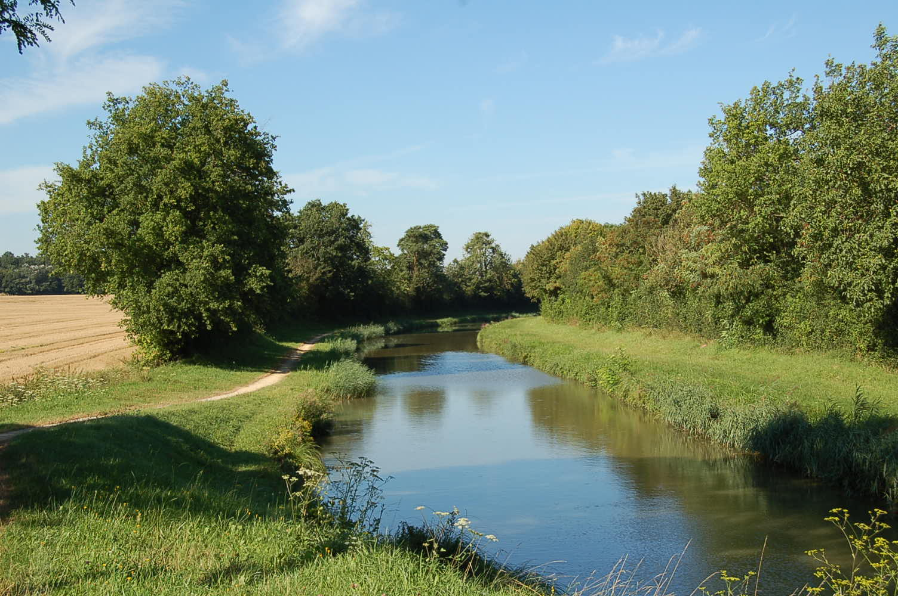
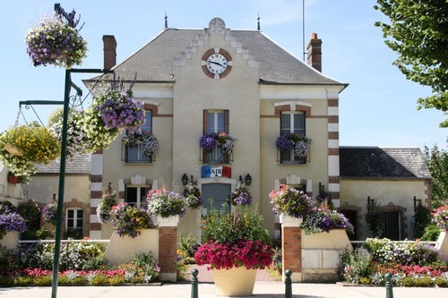
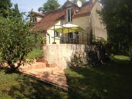
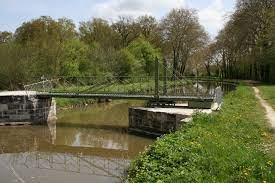
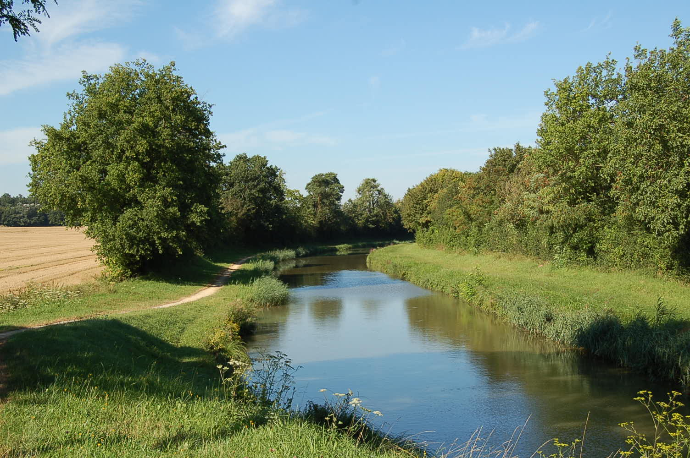
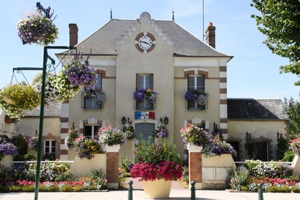
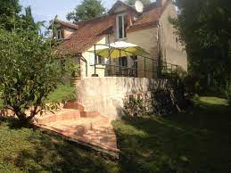
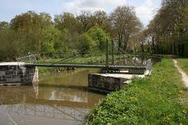

Welcome to La Grande Maison
Discover the charm and beauty of a traditional French country house. Learn how to take care of it and what to do there.
 







Discover the charm and beauty of a traditional French country house. Learn how to take care of it and what to do there.
In addition to breathtaking views, LGM offers a wide variety of activities. Whether you enjoy relaxing or exercizing, you will find something worth doing.
La Grande Maison : your tranquil escape into the untamed beauty of the French wild. Immerse yourself in rustic charm and breathtaking scenery as you leave behind the city and embrace the serenity of the countryside. Discover the joy of waking up to birdsong, exploring lush trails, and gazing at a starlit sky. Book your stay now and embark on a journey of relaxation, rejuvenation, and connection with nature's wonders.